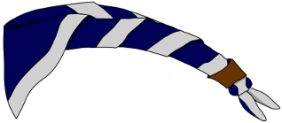

Qui sommes-nous ?
La 48e Impeesa Bruxelles-Cinquantenaire est une unité scout à taille humaine qui entretient un esprit familial au sein de ses membres. Elle assure à chacun de trouver sa place dans un groupe où tout le monde se connait. Elle permet également d'assurer un encadrement de qualité et de tisser des liens de confiance, de complicité et d'amitié durable entre tous ces membres.
Si vous désirez en savoir davantage sur le scoutisme en général et sur les valeurs au coeur de ce mouvement de jeunesse, nous vous invitons à visionner cette vidéo :